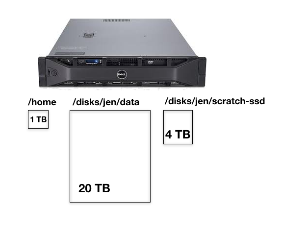
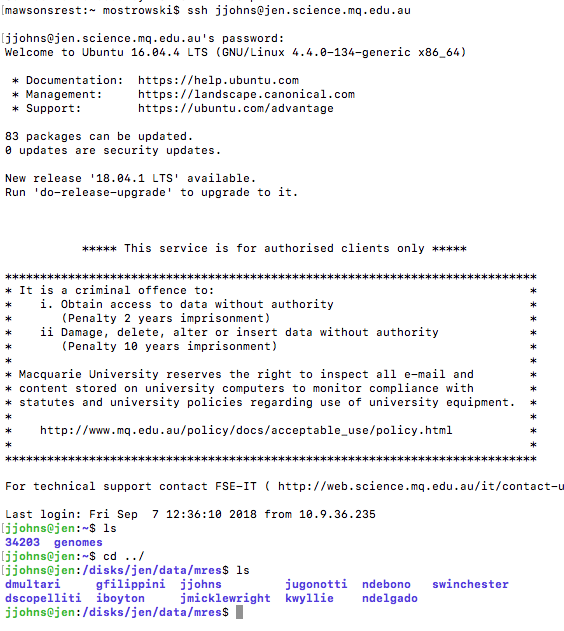

Navigating Files and Directories
Overview
Teaching: 30 min
Exercises: 10 minQuestions
How can I move around on my computer?
How can I see what files and directories I have?
How can I specify the location of a file or directory on my computer?
How can I transfer files from my computer to the server?
Objectives
Explain the similarities and differences between a file and a directory.
Translate an absolute path into a relative path and vice versa.
Construct absolute and relative paths that identify specific files and directories.
Demonstrate the use of tab completion, and explain its advantages.
The part of the operating system responsible for managing files and directories is called the file system. It organizes our data into files, which hold information, and directories (also called “folders”), which hold files or other directories.
Several commands are frequently used to create, inspect, rename, and delete files and directories. To start exploring them, we’ll go to our open shell window.
First let’s find out where we are by running a command called pwd
(which stands for “print working directory”). Directories are like places - at any time
while we are using the shell we are in exactly one place, called
our current working directory. Commands mostly read and write files in the
current working directory, i.e. “here”, so knowing where you are before running
a command is important. pwd shows you where you are:
$ pwd
/disks/data/jen/mres/yourname
Here,
the computer’s response is /disks/jen/data/mres/yourname,
which is your home directory:
Home Directory Variation
The home directory path will look different on different operating systems. On Linux it may look like
/Users/yourname, and on Windows it will be similar toC:\Documents and Settings\yournameorC:\Users\yourname. (Note that it may look slightly different for different versions of Windows.) In future examples, we’ve used Mac output as the default - Linux and Windows output may differ slightly, but should be generally similar.
To understand what a “home directory” is, let’s have a look at how the file system as a whole is organized. For the sake of this example, we’ll be illustrating the filesystem on our scientist Jocelyn’s computer. After this illustration, you’ll be learning commands to explore your own filesystem, which will be constructed in a similar way, but not be exactly identical.
On jen, the filesystem looks like this:

At the top is the root directory
that holds everything else.
We refer to it using a slash character, /, on its own;
this is the leading slash in /disks/jen/data/mres/yourname.
Inside that directory are several other directories:
bin (which is where some built-in programs are stored),
disks (a point where various storage volumes are mounted),
tmp (for temporary files that don’t need to be stored long-term),
and so on.
We know that our current working directory /disks/jen/data/mres/yourname is stored inside /disks/jen/data/mres/
because /disks/jen/data/mres/ is the first part of its name.
Similarly,
we know that /disks/jen/data/mres/ is stored inside the root directory /
because its name begins with /.
The setup of a personal Linux computer would normally be slightly different, but we are entering the era of large and big data, so we have set this server up to accomodate 100s of TB of disk space.
Slashes
Notice that there are two meanings for the
/character. When it appears at the front of a file or directory name, it refers to the root directory. When it appears inside a name, it’s just a separator.
Underneath /disks/jen/data/mres/,
we find one directory for each user with an account on jen, you will find your colleagues directories there

Jocelyn’s files are stored in /disks/jen/data/mres/jjohns,
Nic’s in /disks/jen/data/mres/ndebono,
and Natasha’s in /disks/jen/data/mres/natasha. Let’s use Jocelyn as the user in our
examples here, and we would get /disks/jen/data/mres/jjohns as our home directory.
Typically, when you open a new command prompt you will be in
your home directory to start.
Now let’s learn the command that will let us see the contents of our
own filesystem. We can see what’s in our home directory by running ls,
which stands for “listing”:
$ ls
34203 genomes
(Again, your results may be slightly different depending on your operating system and how you have customized your filesystem.)
ls prints the names of the files and directories in the current directory.
We can make its output more comprehensible by using the flag -F
(also known as a switch or an option) ,
which tells ls to add a marker to file and directory names to indicate what
they are. A trailing / indicates that this is a directory. Depending on your
settings, it might also use colors to indicate whether each entry is a file or
directory.
You might recall that we used ls -F in an earlier example.
$ ls -F
34203/ genomes/
Getting help
ls has lots of other flags. There are two common ways to find out how
to use a command and what flags it accepts:
- We can pass a
--helpflag to the command, such as:$ ls --help - We can read its manual with
man, such as:$ man ls
Depending on your environment you might find that only one of these works
(either man or --help).
We’ll describe both ways below.
The --help flag
Many bash commands, and programs that people have written that can be
run from within bash, support a --help flag to display more
information on how to use the command or program.
$ ls --help
Usage: ls [OPTION]... [FILE]...
List information about the FILEs (the current directory by default).
Sort entries alphabetically if none of -cftuvSUX nor --sort is specified.
Mandatory arguments to long options are mandatory for short options too.
-a, --all do not ignore entries starting with .
-A, --almost-all do not list implied . and ..
--author with -l, print the author of each file
-b, --escape print C-style escapes for nongraphic characters
--block-size=SIZE scale sizes by SIZE before printing them; e.g.,
'--block-size=M' prints sizes in units of
1,048,576 bytes; see SIZE format below
-B, --ignore-backups do not list implied entries ending with ~
-c with -lt: sort by, and show, ctime (time of last
modification of file status information);
with -l: show ctime and sort by name;
otherwise: sort by ctime, newest first
-C list entries by columns
--color[=WHEN] colorize the output; WHEN can be 'always' (default
if omitted), 'auto', or 'never'; more info below
-d, --directory list directories themselves, not their contents
-D, --dired generate output designed for Emacs' dired mode
-f do not sort, enable -aU, disable -ls --color
-F, --classify append indicator (one of */=>@|) to entries
--file-type likewise, except do not append '*'
--format=WORD across -x, commas -m, horizontal -x, long -l,
single-column -1, verbose -l, vertical -C
--full-time like -l --time-style=full-iso
-g like -l, but do not list owner
--group-directories-first
group directories before files;
can be augmented with a --sort option, but any
use of --sort=none (-U) disables grouping
-G, --no-group in a long listing, don't print group names
-h, --human-readable with -l and/or -s, print human readable sizes
(e.g., 1K 234M 2G)
--si likewise, but use powers of 1000 not 1024
-H, --dereference-command-line
follow symbolic links listed on the command line
--dereference-command-line-symlink-to-dir
follow each command line symbolic link
that points to a directory
--hide=PATTERN do not list implied entries matching shell PATTERN
(overridden by -a or -A)
--indicator-style=WORD append indicator with style WORD to entry names:
none (default), slash (-p),
file-type (--file-type), classify (-F)
-i, --inode print the index number of each file
-I, --ignore=PATTERN do not list implied entries matching shell PATTERN
-k, --kibibytes default to 1024-byte blocks for disk usage
-l use a long listing format
-L, --dereference when showing file information for a symbolic
link, show information for the file the link
references rather than for the link itself
-m fill width with a comma separated list of entries
-n, --numeric-uid-gid like -l, but list numeric user and group IDs
-N, --literal print raw entry names (don't treat e.g. control
characters specially)
-o like -l, but do not list group information
-p, --indicator-style=slash
append / indicator to directories
-q, --hide-control-chars print ? instead of nongraphic characters
--show-control-chars show nongraphic characters as-is (the default,
unless program is 'ls' and output is a terminal)
-Q, --quote-name enclose entry names in double quotes
--quoting-style=WORD use quoting style WORD for entry names:
literal, locale, shell, shell-always,
shell-escape, shell-escape-always, c, escape
-r, --reverse reverse order while sorting
-R, --recursive list subdirectories recursively
-s, --size print the allocated size of each file, in blocks
-S sort by file size, largest first
--sort=WORD sort by WORD instead of name: none (-U), size (-S),
time (-t), version (-v), extension (-X)
--time=WORD with -l, show time as WORD instead of default
modification time: atime or access or use (-u);
ctime or status (-c); also use specified time
as sort key if --sort=time (newest first)
--time-style=STYLE with -l, show times using style STYLE:
full-iso, long-iso, iso, locale, or +FORMAT;
FORMAT is interpreted like in 'date'; if FORMAT
is FORMAT1<newline>FORMAT2, then FORMAT1 applies
to non-recent files and FORMAT2 to recent files;
if STYLE is prefixed with 'posix-', STYLE
takes effect only outside the POSIX locale
-t sort by modification time, newest first
-T, --tabsize=COLS assume tab stops at each COLS instead of 8
-u with -lt: sort by, and show, access time;
with -l: show access time and sort by name;
otherwise: sort by access time, newest first
-U do not sort; list entries in directory order
-v natural sort of (version) numbers within text
-w, --width=COLS set output width to COLS. 0 means no limit
-x list entries by lines instead of by columns
-X sort alphabetically by entry extension
-Z, --context print any security context of each file
-1 list one file per line. Avoid '\n' with -q or -b
--help display this help and exit
--version output version information and exit
The SIZE argument is an integer and optional unit (example: 10K is 10*1024).
Units are K,M,G,T,P,E,Z,Y (powers of 1024) or KB,MB,... (powers of 1000).
Using color to distinguish file types is disabled both by default and
with --color=never. With --color=auto, ls emits color codes only when
standard output is connected to a terminal. The LS_COLORS environment
variable can change the settings. Use the dircolors command to set it.
Exit status:
0 if OK,
1 if minor problems (e.g., cannot access subdirectory),
2 if serious trouble (e.g., cannot access command-line argument).
GNU coreutils online help: <http://www.gnu.org/software/coreutils/>
Full documentation at: <http://www.gnu.org/software/coreutils/ls>
or available locally via: info '(coreutils) ls invocation'
Unsupported command-line options
If you try to use an option (flag) that is not supported,
lsand other programs will usually print an error message similar to:$ ls -jls: invalid option -- 'j' Try 'ls --help' for more information.
The man command
The other way to learn about ls is to type
$ man ls
This will turn your terminal into a page with a description
of the ls command and its options and, if you’re lucky, some examples
of how to use it.
To navigate through the man pages,
you may use ↑ and ↓ to move line-by-line,
or try B and Spacebar to skip up and down by a full page.
To search for a character or word in the man pages,
use / followed by the character or word you are searching for.
To quit the man pages, press Q.
Manual pages on the web
Of course there is a third way to access help for commands: searching the internet via your web browser. When using internet search, including the phrase
unix man pagein your search query will help to find relevant results.GNU provides links to its manuals including the core GNU utilities, which covers many commands introduced within this lesson.
Exploring More
lsFlagsWhat does the command
lsdo when used with the-land-hflags?Some of its output is about properties that we do not cover in this lesson (such as file permissions and ownership), but the rest should be useful nevertheless.
Solution
The
-lflag makeslsuse a long listing format, showing not only the file/directory names but also additional information such as the file size and the time of its last modification. The-hflag makes the file size “human readable”, i.e. display something like5.3Kinstead of5369.
Listing Recursively and By Time
The command
ls -Rlists the contents of directories recursively, i.e., lists their sub-directories, sub-sub-directories, and so on at each level. The commandls -tlists things by time of last change, with most recently changed files or directories first. In what order doesls -R -tdisplay things? Hint:ls -luses a long listing format to view timestamps.Solution
The files/directories in each directory are sorted by time of last change.
Here,
we can see that our home directory contains mostly sub-directories.
Any names in your output that don’t have trailing slashes,
are plain old files.
And note that there is a space between ls and -F:
without it,
the shell thinks we’re trying to run a command called ls-F,
which doesn’t exist.
We can also use ls to see the contents of a different directory. Let’s take a
look at our genomes directory by running ls -F genomes,
i.e.,
the command ls with the -F flag and the argument genomes.
The argument genomes tells ls that
we want a listing of something other than our current working directory:
$ ls -F genomes
MO_Syn_HB1133_01092017.faa MO_Syn_HB1133_01092017.faa.v.crak.out MO_Syn_HB1133_01092017.ffn MO_Syn_HB1133_01092017.fna MO_Syn_HB1133_01092017.fsa
Your output should be a list of all the files and sub-directories on your genomes folder.
As you may now see, using a bash shell is strongly dependent on the idea that your files are organized in a hierarchical file system. Organizing things hierarchically in this way helps us keep track of our work: it’s possible to put hundreds of files in our home directory, just as it’s possible to pile hundreds of printed papers on our desk, but it’s a self-defeating strategy.
We can change our location to a different directory, so we are no longer located in our home directory.
The command to change locations is cd followed by a
directory name to change our working directory.
cd stands for “change directory”,
which is a bit misleading:
the command doesn’t change the directory,
it changes the shell’s idea of what directory we are in.
Let’s say we want to move to the 34202 data directory we saw above. n.b. the folder number in your directory may be different from Jocelyn’s, so change it as necessary. We can
use the following series of commands to get there and list the contents:
$ cd ../
$ cd 34203
$ ls
MO_Syn_HB1133_01092017.faa MO_Syn_HB1133_01092017.faa.v.crak.out MO_Syn_HB1133_01092017.ffn MO_Syn_HB1133_01092017.fna MO_Syn_HB1133_01092017.fsa
These commands will move to our home directory, then into
the 34203 directory, then into the data directory. cd doesn’t print anything,
but if we run pwd after it, we can see that we are now
in /disks/jen/data/mres/jjohns/34203.
If we run ls without arguments now,
it lists the contents of /disks/jen/data/mres/jjohns/34203,
because that’s where we now are:
$ pwd
/disks/jen/data/mres/jjohns/34203
$ ls -F
34203_1_16S_UNSW_GAACCAAA-ACGCGTGA_ATNUK_S37_L001_I2.fastq.gz 34203_1_A16S_UNSW_AAGAGGCA-TATCCTCT_ATN3N_S20_L001_I2.fastq.gz
34203_1_16S_UNSW_GAACCAAA-ACGCGTGA_ATNUK_S37_L001_R1.fastq.gz 34203_1_A16S_UNSW_AAGAGGCA-TATCCTCT_ATN3N_S20_L001_R1.fastq.gz
34203_1_18S_UNSW_AAGAGGCA-TATCCTCT_ATNVT_S20_L001_I2.fastq.gz 34203_1_PE_680bp_MM_AGRF_H3KWWBCXY_GCTACGCT-CTCTCTAT_L001_R1.fastq.gz
34203_1_18S_UNSW_AAGAGGCA-TATCCTCT_ATNVT_S20_L001_R1.fastq.gz 34203_1_PE_680bp_MM_AGRF_H3KWWBCXY_GCTACGCT-CTCTCTAT_L001_R2.fastq.gz
We now know how to go down the directory tree, but how do we go up? We might try the following:
$ cd 34203
-bash: cd: 34203: No such file or directory
But we get an error! Why is this?
With our methods so far,
cd can only see sub-directories inside your current directory. There are
different ways to see directories above your current location; we’ll start
with the simplest.
There is a shortcut in the shell to move up one directory level that looks like this:
$ cd ..
.. is a special directory name meaning
“the directory containing this one”,
or more succinctly,
the parent of the current directory.
Sure enough,
if we run pwd after running cd .., we’re back in /disks/jen/data/mres/jjohns:
$ pwd
/disks/jen/data/mres/jjohns
The special directory .. doesn’t usually show up when we run ls. If we want
to display it, we can give ls the -a flag:
$ ls -F -a
./ ../ 34203/ .bash_logout .bashrc .cache/ genomes/ .profile
-a stands for “show all”;
it forces ls to show us file and directory names that begin with .,
such as .. (which, if we’re in /disks/jen/data/mres/jjohns, refers to the /disks/jen/data/mres/ directory)
As you can see,
it also displays another special directory that’s just called .,
which means “the current working directory”.
It may seem redundant to have a name for it,
but we’ll see some uses for it soon.
Note that in most command line tools, multiple flags can be combined
with a single - and no spaces between the flags: ls -F -a is
equivalent to ls -Fa.
Other Hidden Files
In addition to the hidden directories
..and., you may also see a file called.bash_profile. This file usually contains shell configuration settings. You may also see other files and directories beginning with.. These are usually files and directories that are used to configure different programs on your computer. The prefix.is used to prevent these configuration files from cluttering the terminal when a standardlscommand is used.
Orthogonality
The special names
.and..don’t belong tocd; they are interpreted the same way by every program. For example, if we are in/disks/jen/data/mres/jjohns, the commandls ..will give us a listing of/disks/jen/data/mres/jjohns. When the meanings of the parts are the same no matter how they’re combined, programmers say they are orthogonal: Orthogonal systems tend to be easier for people to learn because there are fewer special cases and exceptions to keep track of.
These then, are the basic commands for navigating the filesystem on your computer:
pwd, ls and cd. Let’s explore some variations on those commands. What happens
if you type cd on its own, without giving
a directory?
$ cd
How can you check what happened? pwd gives us the answer!
$ pwd
/disks/jen/data/mres/jjohns
It turns out that cd without an argument will return you to your home directory,
which is great if you’ve gotten lost in your own filesystem.
Let’s try returning to the 34203 directory from before. Last time, we used
three commands, but we can actually string together the list of directories
to move to 34203 in one step:
$ cd /disks/jen/data/mres/jjohns/34203
Check that we’ve moved to the right place by running pwd and ls -F
If we want to move up one level from the data directory, we could use cd ... But
there is another way to move to any directory, regardless of your
current location.
So far, when specifying directory names, or even a directory path (as above),
we have been using relative paths. When you use a relative path with a command
like ls or cd, it tries to find that location from where we are,
rather than from the root of the file system.
However, it is possible to specify the absolute path to a directory by
including its entire path from the root directory, which is indicated by a
leading slash. The leading / tells the computer to follow the path from
the root of the file system, so it always refers to exactly one directory,
no matter where we are when we run the command.
This allows us to move to our 34203 directory from anywhere on
the filesystem (including from inside data). To find the absolute path
we’re looking for, we can use pwd and then extract the piece we need
to move to /disks/jen/data/mres/jjohns.
$ pwd
/disks/jen/data/mres/jjohns
$ cd /disks/jen/data/mres/jjohns/34203
Run pwd and ls -F to ensure that we’re in the directory we expect.
Two More Shortcuts
The shell interprets the character
~(tilde) at the start of a path to mean “the current user’s home directory”. For example, if Jocelyn’s home directory is/disks/jen/data/mres/jjohns, then~/34203is equivalent to/disks/jen/data/mres/jjohns/34203. This only works if it is the first character in the path:here/there/~/elsewhereis not/here/there/jjohns/elsewhere.Another shortcut is the
-(dash) character.cdwill translate-into the previous directory I was in, which is faster than having to remember, then type, the full path. This is a very efficient way of moving back and forth between directories. The difference betweencd ..andcd -is that the former brings you up, while the latter brings you back. You can think of it as the Last Channel button on a TV remote.
Absolute vs Relative Paths
Starting from
/disks/jen/data/mres/jjohns/genomes, which of the following commands could Jocelyn use to navigate to her home directory, which is/disks/jen/data/mres/jjohns?
cd .cd /cd /disks/jen/data/mres/cd ../..cd ~cd homecd ~/data/..cdcd ..Solution
- No:
.stands for the current directory.- No:
/stands for the root directory.- No: Jocelyn’s’s home directory is
/disks/jen/data/mres/jjohns.- No: this goes up two levels, i.e. ends in
/disks/jen/data/mres.- Yes:
~stands for the user’s home directory, in this case/disks/jen/data/mres/jjohns.- No: this would navigate into a directory
homein the current directory if it exists.- Yes: unnecessarily complicated, but correct.
- Yes: shortcut to go back to the user’s home directory.
- Yes: goes up one level.
Jocelyn’s Pipeline: Organizing Files
Knowing just this much about files and directories,
Jocelyn is ready to organize the files that metagenome analyses will create.
First,
she creates a directory called quality
(to remind herself that we will start with QC, always).
Inside that,
she creates a directory called summary,
Sorting Output
Jocelyn names her directories “year-month-day”, with leading zeroes for months and days, because the shell displays file and directory names in alphabetical order. If she used month names, December would come before July; if she didn’t use leading zeroes, November (‘11’) would come before July (‘7’). Similarly, putting the year first means that June 2012 will come before June 2013.
Each of her metagenome samples is labelled according to a conserved convention
with a unique 5 character ID,
such as “34203”.
This is what she used in her collection log
to record the location, time, depth, and other characteristics of the sample,
so she decides to use it as part of each data file’s name.
Since the assay machine’s output is plain text,
she will call her files 34203.txt, 34203.txt, and so on.
Allfiles will go into the same directory.
Now in her current directory 34203,
Jocelyn can see what files she has using the command:
$ ls 34203
This is a lot to type (actually, not really, but we’ll appreciate this later, but she can let the shell do most of the work through what is called tab completion. If she types:
$ ls 34
and then presses tab (the tab key on her keyboard), the shell automatically completes the directory name for her:
$ ls 34203
If she presses tab again, Bash would add another directory to the command, if there were one. Pressing tab again does nothing, since there are 8 possibilities; pressing tab twice brings up a list of all the files, and so on. This is called tab completion, and we will see it in many other tools as we go on.
Key Points
The file system is responsible for managing information on the disk.
Information is stored in files, which are stored in directories (folders).
Directories can also store other directories, which forms a directory tree.
cd pathchanges the current working directory.
ls pathprints a listing of a specific file or directory;lson its own lists the current working directory.
pwdprints the user’s current working directory.
/on its own is the root directory of the whole file system.A relative path specifies a location starting from the current location.
An absolute path specifies a location from the root of the file system.
Directory names in a path are separated with
/on Unix, but\on Windows.
..means ‘the directory above the current one’;.on its own means ‘the current directory’.Most files’ names are
something.extension. The extension isn’t required, and doesn’t guarantee anything, but is normally used to indicate the type of data in the file.